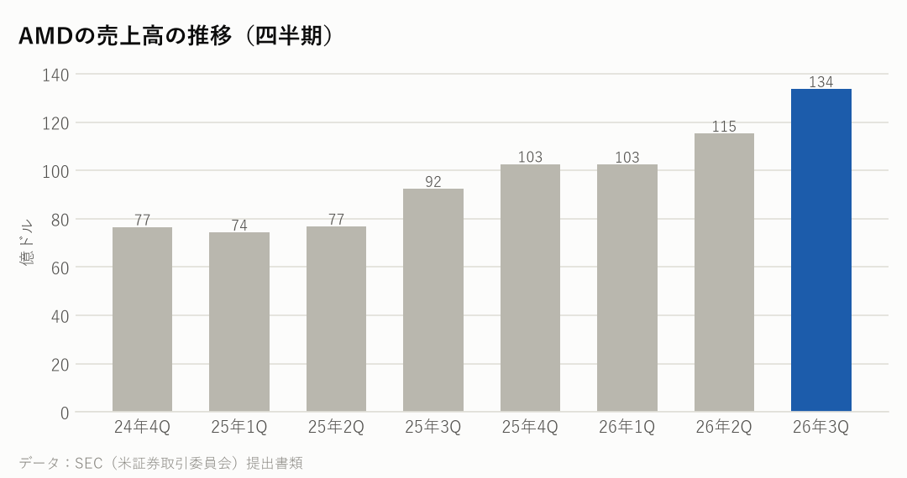
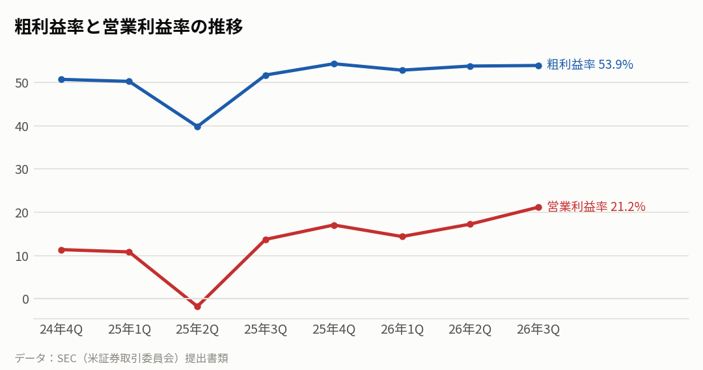
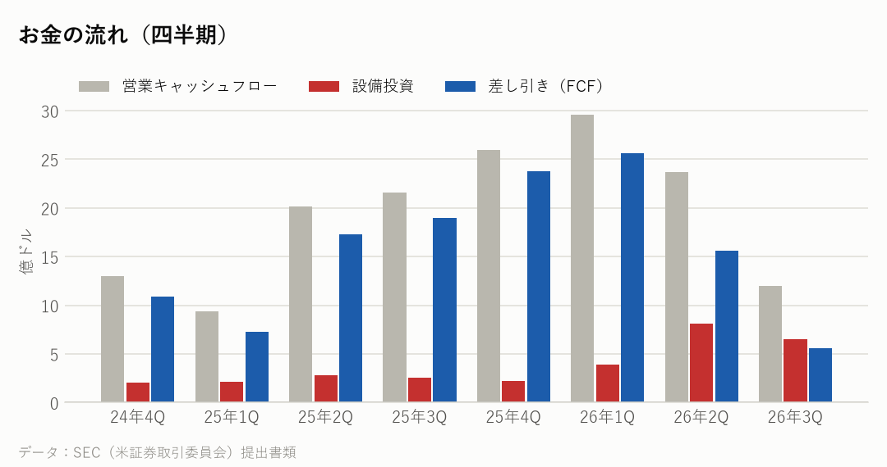
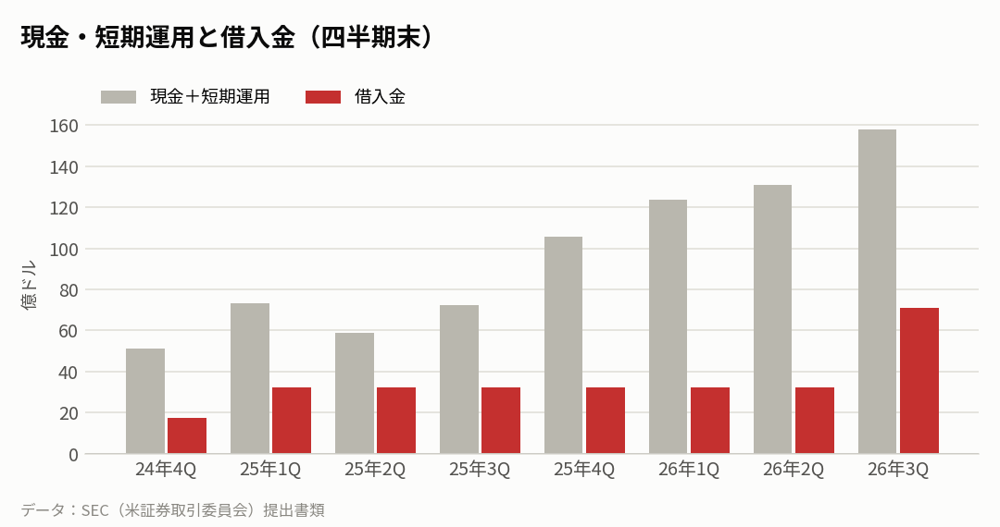
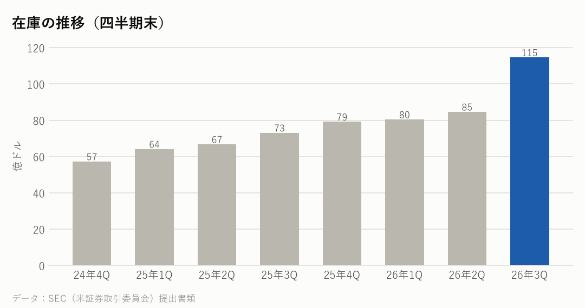

AMD｜2026年7〜9月期の決算｜決算発表 2026年11月3日
AMDの決算：データセンターがほぼ倍増、次の四半期は約170億ドルの見通し
7〜9月期の売上高は前年同期比45%増の134億ドルで、過去最高だった。データセンター部門が97%伸びて全体を押し上げた。10〜12月期は売上高約170億ドル（±3%）と、さらに増える見通しを示した。
主な数字（2026年7〜9月期）
| 今回 | 前年同期 | 前年比 | |
|---|---|---|---|
| 売上高 | 134億ドル | 92億ドル | +44.7% |
| 粗利益率 | 53.9% | 51.7% | |
| 営業利益率 | 21.2% | 13.7% | |
| 純利益 | 24億ドル | 12億ドル | |
| 1株利益（希薄化後） | 1.46ドル | 0.75ドル |
部門ごとの売上
| 部門 | 売上 | 前年比 |
|---|---|---|
| データセンター（サーバー・AI） | 85億ドル | +97.0% |
| PC・ゲーム | 37億ドル | -8.0% |
| 組み込み（産業・車など） | 11億ドル | +29.0% |

会社の見通し（次の四半期）
| 売上高 | 約170億ドル（±3%。今回 134億ドル） |
|---|---|
| 粗利益率（調整後） | 約55%（今回 56%） |
| 営業費用（調整後） | 約37.5億ドル（今回 35.6億ドル） |
- 見通しの売上高は約170億ドルで、今回の134億ドルから約27%増える計算になる。粗利益率（調整後）は約55%と、今回の56%からわずかに下がる見込みだ。
- 決算資料では、Anthropic・メタ・マイクロソフト・OpenAI・オラクルが、AMDのラック型のAIシステム「Helios」で動かし始めたと説明している。
もうけの力

お金の状況



投資している分（出資の評価額）
| 未上場株などへの出資（帳簿上の価値） | 19億ドル |
|---|---|
| 上場株への出資（時価） | ― |
| 合計 | 19億ドル |
| 長期の出資の損益（7〜9月期・決算資料より） | +0.67億ドル |
| 顧客に渡したワラントの評価損（7〜9月期・決算資料より） | −10.97億ドル |
- 長期の出資の評価・売却による損益は、7〜9月期は約0.7億ドルの利益だった。
- 一部の顧客に渡したワラント（AMDの株を決まった値段で買える権利）は、AMDの株価が上がるほど決算上の損失になる。7〜9月期は約11億ドルの評価損で、調整後の利益からは除いている。現金が出ていく損失ではない。
- World Labs と Taalas の2社の買収を決めた。どちらも年内の完了を見込んでいる。
同業他社と比べると
各社の直近の四半期。在庫の日数は「在庫が売上原価の何日分か」。
| 会社 | 決算期末 | 売上高 | 前年比 | 粗利益率 | 営業利益率 | 設備投資/売上 | 在庫の日数 |
|---|---|---|---|---|---|---|---|
| AMD | 2026-09 | 134億ドル | +44.7% | 53.9% | 21.2% | 4.8% | 169日 |
| インテル | 2026-09 | 165億ドル | +20.9% | 43.0% | 15.3% | 24.4% | 126日 |
| エヌビディア | 2026-07 | 962億ドル | +105.9% | 75.0% | 66.2% | 2.8% | 119日 |
| クアルコム | 2026-09 | 103億ドル | -8.4% | 50.7% | 13.1% | 8.9% | 155日 |
| ブロードコム | 2026-08 | 296億ドル | +85.5% | 69.1% | 53.9% | 1.8% | 45日 |
関連する会社の決算：お客さん（大手クラウド）の設備投資
データセンター向けの半導体を買う側の投資の勢い。
| 会社 | 決算期末 | 設備投資 | 前年同期 | 前年比 |
|---|---|---|---|---|
| マイクロソフト | 2026-09 | 394億ドル | 194億ドル | +103.0% |
| アマゾン | 2026-09 | 773億ドル | 351億ドル | +120.1% |
| アルファベット | 2026-09 | 514億ドル | 240億ドル | +114.4% |
| メタ | 2026-09 | 339億ドル | 188億ドル | +80.3% |
| オラクル | 2026-08 | 285億ドル | 85億ドル | +235.2% |
| 合計 | 2,304億ドル | 1,058億ドル | +117.8% |
NasdaqWhy の視点：データから読み取れる注目点
決算資料と各社の公式データを並べて読み取れることです。将来を予想するものではありません。
- 在庫は3か月で35%増えて115億ドルになった。何日分の在庫があるかを示す在庫の日数は約169日と、前年同期（約149日）より長い。決算資料に理由の説明はなく、次の四半期の売上の伸びと合わせて、在庫の日数が戻るかは次の決算で確かめたい点だ。
- 設備投資は売上の約5%と軽い。工場を持たず、生産をTSMCなどに任せる会社の特徴で、インテル（約24%）との差ははっきりしている。
- AMDは決算資料のリスクの項目に、メモリーの供給や基板（サブストレート）の確保を挙げている。データセンター向けの出荷が増えるほど、これらの部品の確保が重要になる。つながり：基板の材料→パッケージ基板→CPU・GPU（AMD）→サーバー→クラウド。
- 大手クラウド5社（マイクロソフト・アマゾン・Alphabet・メタ・オラクル）の直近の四半期の設備投資は、合計で前年同期の約2.2倍。AMDのデータセンター部門の+97%は、この投資の流れとつながっている。
- 売上全体の伸びは、エヌビディア（約2.1倍）やブロードコム（+86%）が先を行く。一方でAMDの+45%は、インテル（+21%）やクアルコム（−8%）を上回った。
次に確認したい決算・予定
- エヌビディアの決算（11月下旬の見込み）：AI向けGPUの需要を、同業の側から確かめる材料。
- AMDの次の決算（2027年2月ごろの見込み）：約170億ドルの見通しどおりか、在庫の日数と粗利益率がどうなったか。
出典：AMD 決算資料（2026年11月3日）・四半期報告書（10-Q）、各社の SEC 提出書類
※情報提供のみ。投資判断はご自身でお願いします。※個人運営で、Nasdaq, Inc.とは無関係です。